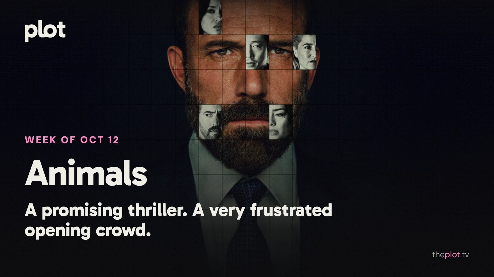

|
the week of October 12
|
|
Ben Affleck is explaining the choices behind Animals, while Carrie has horror fans debating what a new adaptation owes the original. In theaters, Other Mommy has drawn a crowd without much affection. This week also brings a Mike Tyson documentary, Trina Vega back at school, and another season of The Diplomat. By Friday, you can choose a hostage crisis, a wounded outlaw, or a romance. Nobody said your watchlist had to have a consistent personality.
 Image: Animals (2026), promotional backdrop. Source: TMDB. Text overlay by Plot.
In theaters
Other Mommy drew a crowd without winning people over: an estimated $27.5 million domestic opening for October 9-11, alongside a D+ CinemaScore. The Jessica Chastain horror sold its unsettling premise. Opening-night audiences were much less happy with the full movie.
The Social Reckoning turns Aaron Sorkin's attention to Facebook's whistleblower story. Frances Haugen and reporter Jeff Horwitz are at the center. The draw is familiar Sorkin territory: people trying to force a powerful institution to answer a question.
Digger is still there for anyone who wants to see Tom Cruise outside his reliable blockbuster mode. Its second domestic weekend brought in about $3.2 million. The spectacle is unusual; the audience is proving harder to find.
What everyone's talking about
Animals comes with an unusually revealing production story. Ben Affleck tells TheWrap he substantially reworked the script and used AI in post-production for tasks such as adjusting lighting and removing visual effects elements. He describes a film built to keep you reassessing its characters' morality. That ambition is worth setting beside the same publication's review, which finds an overly familiar kidnapping thriller with little suspense. The tools are a talking point, but they don't explain away the more ordinary question: does the story make you care what happens next?
Carrie has arrived on Prime Video with another answer to why anyone would revisit a familiar story. The extra time lets Mike Flanagan linger on the teenagers and adults around Carrie, an expansion TV Insider welcomes. Bringing that cruelty into the social-media age makes the bullying harder to leave at the school gates. GamesRadar+ likes the modern approach but finds the conclusion too busy preparing for more story. A Flanagan fan discussion has viewers praising the performances while arguing over the changes. Worth discussing after you've finished. Please spare the group chat the ending until then.
Production note. This line is not in the sent letter.
GIF: Finishing a show and realizing the group chat needs a spoiler waiting period. Savannah to choose the GIF. Now on TV and Streaming
 Image: Animals (2026), promotional backdrop. Source: TMDB.
Animals arrived on Netflix October 9. Ben Affleck and Kerry Washington play a couple whose son's kidnapping threatens an already carefully managed life. If the premise still has you curious, it is a self-contained movie-night commitment. Keep the early reservations above in mind.
 Image: Below (2026), promotional backdrop. Source: TMDB.
Below is on Netflix from October 8. A fisherman is trying to save his community from a sea creature, with his family's safety tangled up in its future. For the viewer who wants a monster story with a whole town to worry about.
 Image: Haunted Hotel (2025), promotional backdrop. Source: TMDB.
Haunted Hotel returned to Netflix October 9 with season two. Katherine and her family are still trying to make a home where paranormal problems keep checking in. The comedy option when you want the Halloween mood without putting yourself through another full-scale ordeal.
Less scrolling. Better watching. Your weekly guide to what's on, what's coming, and what's actually worth your time.
Coming up
|
|
You're receiving this because you subscribed at theplot.tv.
Unsubscribe
SUSUMU HOUSE · Level 1, 63-73 Ann Street, Surry Hills, NSW 2010 |
 Play the official trailer
Play the official trailer Play the official trailer
Play the official trailer Play the official trailer
Play the official trailer